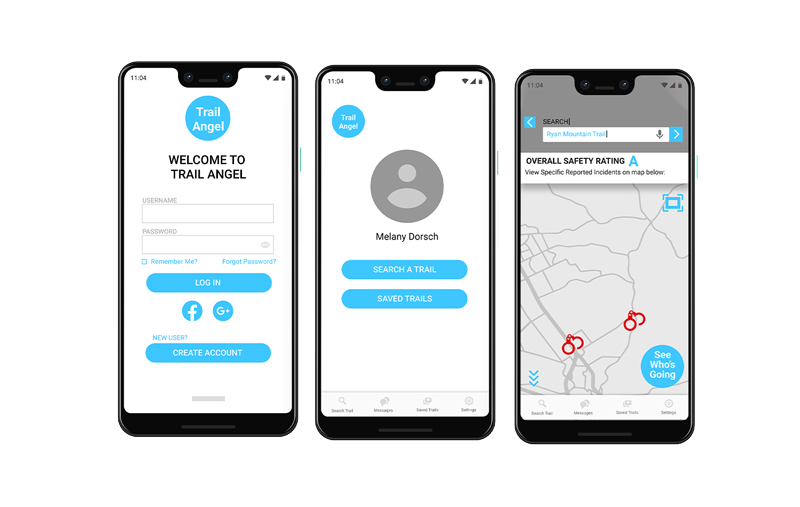

Trail Angel


Definition: Trail Angels are people who go out of their way to make life a little (or sometimes a lot) better for hikers."
Trail Angel is an idea my team and I developed when we began discussing our hobbies, and learned our common love of hiking but not going as often as we would like either due to safety concerns of going alone, or by not having someone to go with. As women who love hiking but often fear going alone for safety reasons, we all personally would enjoy having an app around to help ease that anxiety.
We are developing an app for women who love hiking. Our app allows users to find other female hiking companions, monitor crime data for specific hiking locations, and find other specific safety information in one central location. The app is designed to help women feel safer while hiking.
Cassandra Mobley, Mikki Holtzheur
Project Manager
3 Weeks
Figma, InVision

We had an idea based on our experiences, but first steps are to understand if a hiking safety
companion is something that other women or people would want, and if it is even common for women
to
have reservations when hiking alone. We needed a better understanding of this market to move
forward, and to learn what features would be beneficial.
Before diving into this research, we created a research plan to define what the research goals
were,
and how to go about getting the right information to move forward.
We began with market research by creating a survey that we distributed to hikers of all genders, although receiving mostly female responses. This was used to understand what, if anything was affecting the frequency of going for a hike. Additionally, if there were safety concerns when going alone.
After conducting market research, we began analyzing existing products on the market to determine their strengths and weaknesses We narrowed competitors to six that are top in the market and that solve similar problems ranging from safety to social networking. Through competitor analysis, we were able to understand different approaches that companies were taking and develop ways to make Trail Angel stand out and also determine best decision to take. We saw the most opportunity with merging a way to see safety risks quickly and easily in the hiking area and also connecting female hikers to help ease any anxiety.
After gaining a better understanding through surveys, and through researching competitors, we
began conducting user interviews to get direct insight into the thoughts and experiences of our
potential users and what would make users feel safe when doing on hikes?
Six people chosen to be interviewed. Four female, and two male so we could stay true to our
primary demographic, but also gain insight on whether women should be the only target audience.
To create a more efficient and thorough interview process, I decided to have us conduct initial
interviews together, where I would be the interviewer, Mikki would take notes, and Cassandra
would create sticky notes.
After conducting user interviews, we moved onto the synthesizing process.
We used Miro to create and sticky notes from all of our interviews, which helped to sort and categorize all of our interview responses.

We then read over the notes, and noticed certain patterns that we used to begin grouping the responses into. This helped to visualize what were common concerns or thoughts among our users, which helped us further understand what could be done to help them.
Many users discussed their hiking habits, including how often they like to go, preparations they take before hiking, and with whom they prefer to go with.
Users discussed the ways they like to plan for a hike, including whether or not they research the safety of a location, how they find new locations, and how they like to be prepared.
Many users expressed safety concerns or said that they prefer hiking in a group or with someone else specifically for safety reasons.
One of our initial realizations was that there was a big difference between the safety concerns among the average responses from men versus women. Women were less likely to feel safe hiking alone and more of their concerns revolved around personal wellbeing whereas men were more concerned about material possessions. This research further confirmed our initial intuition to primarily have women be the target demographic for our app as they definitely had more worries based on our responses.
One of our initial realizations was that there was a big difference between the safety concerns among the average responses from men versus women. Women were less likely to feel safe hiking alone and more of their concerns revolved around personal wellbeing whereas men were more concerned about material possessions. This research further confirmed our initial intuition to primarily have women be the target demographic for our app as they definitely had more worries based on our responses.
Now that we had an understanding of who our user was and what she needs, we needed to dig deeper into how she might interact with our product, and learn what way it could improve her problem or situation. Creating the storyboard helped me to envision Melany's journey and pains in her life that were being addressed with Trail Angel.

Using the synthesized research, we were able to begin defining the core problems, and therefore develop solutions.
We believe that female hikers seldom go alone to trails because they are worried about their safety.
How might we connect like-minded women hikers, improve their safety and remove barriers that come with waiting on friends' schedules?
After developing a solution based on our research, it was time to do some brainstorming to figure out how to visualize this and bring it to life. We began creating an "I Like... I Wish... What If..." chart of ways to potentially address user needs. It is important not to limit ideas during brainstorming, and just get every potential thought or possibility out there before analyzing them and moving to the next step.
Using these statements, we began analyzing which are the most important and should be prioritized for our app. As a team, we discussed each statement and narrowed it down to be placed on our feature prioritization matrix.
Top three features according to priority is:
These three features answer all of the major problems that our users need to be addressed, and ultimately solves the problem of hikers feeling unsafe or missing out on a hike due to not having anyone to go with.
After knowing which features we needed to prioritized, it was time to start thinking of how to present these features through our app. We created a user scenario, which gave us insight on how someone might navigate the app.

Now that we had a user flow, it was time to bring this to life through paper prototyping. Each team member was tasked to create individual sketches based on the developed user flow. We then met and laid out all of the paper prototypes into a shared Figma board, so we could discuss, compare, and contrast which screens were working and which were not, to help us figure out how to combine all of the most affective prototypes to move onto testing.
Screenshot of our Figma board with three different each team members' paper prototype.
We went page by page and discussed what was working and not working, which we used to create a combined paper prototype ready for testing.
We drafted a usability testing plan to begin testing the digital prototype.
Through testing we learned where users were struggling with navigation, and what was working properly. Using this information, we devised the prototype and repeated testing before reaching a final solution.
Trail Angel is an idea my team and I developed when we began discussing our hobbies, and learned our common love of hiking but not going as often as we would like either due to safety concerns of going alone, or by not having someone to go with. As women who love hiking but often fear going alone for safety reasons, we all personally would enjoy having an app around to help ease that anxiety.